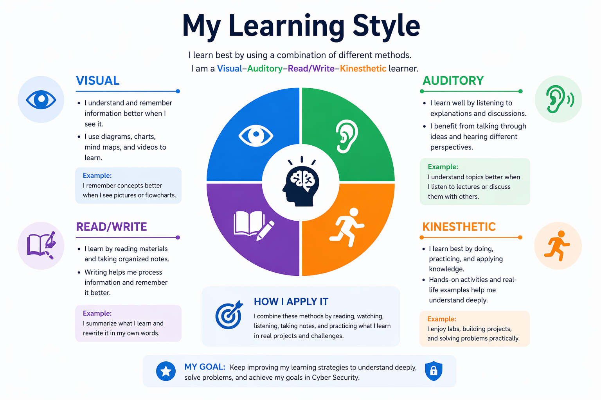
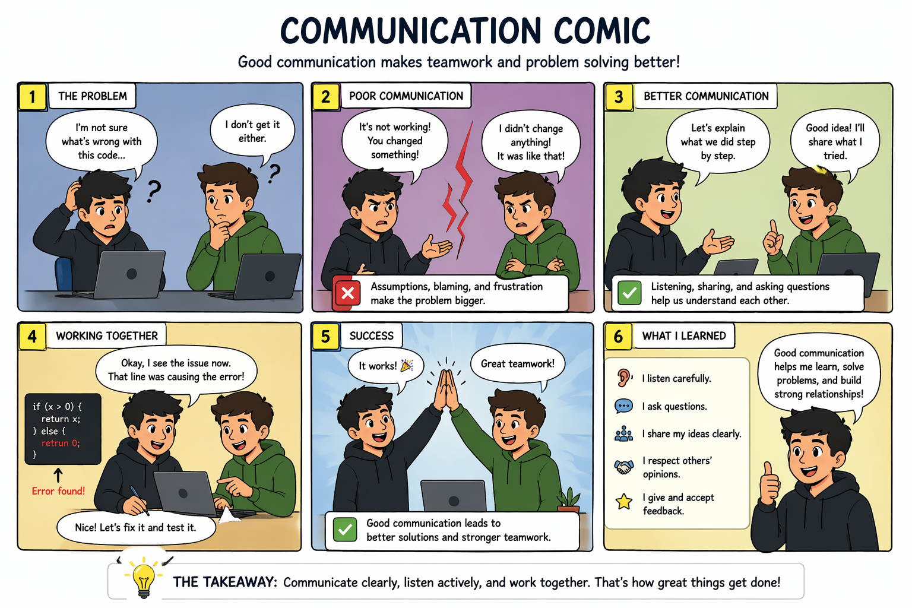
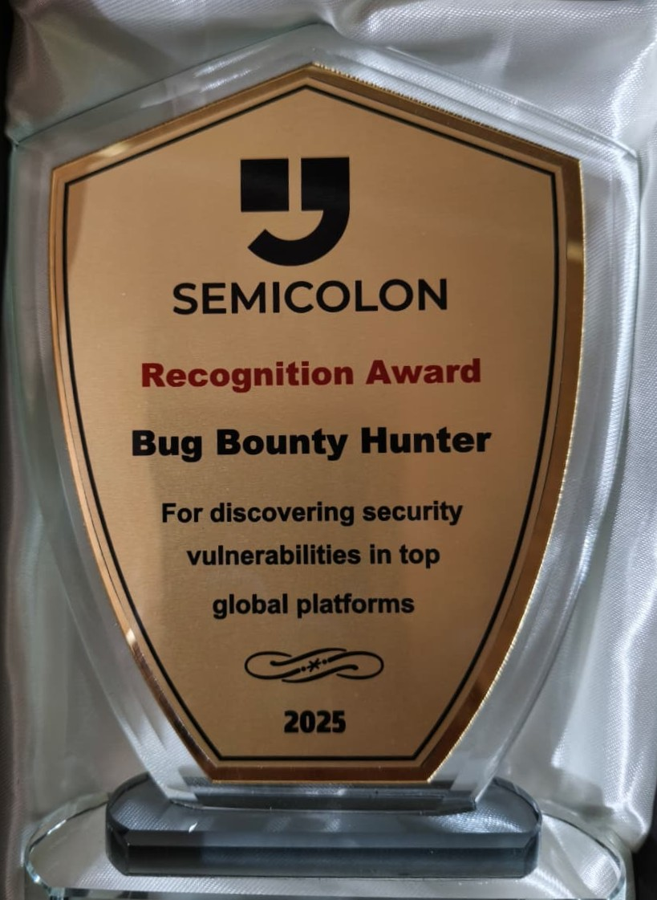

About Me
I am a dedicated Computer Science student at Beirut Arab University (BAU), deeply passionate about cybersecurity, ethical hacking, and web application security. As an active bug bounty hunter on HackerOne, I responsibly identify and report security vulnerabilities to help global organizations strengthen their digital defenses.
My mission is to continuously refine my technical, communication, and professional skills to build a resilient and impactful career in cybersecurity.
Curriculum Vitae
Personal Details
- Name: Oussama Malass
- Email: malassouss@gmail.com
- Phone: 70 276 166
- Location: Tripoli, Lebanon
- LinkedIn: linkedin.com/in/oussama-malass
Education
- BSc Computer Science
Beirut Arab University (BAU)
3 years, expected graduation 2026 - Relevant Coursework: Programming, Web Development, Databases, Networks, Software Engineering, Operating Systems, Data Structures, Cybersecurity
Experience
- Bug Bounty Hunter – HackerOne
April 2024 – Present
Identified and reported vulnerabilities for major companies (Porsche, DoorDash, Deriv, Alshaya, Krisp, etc.)
Skills & Projects
- Web app vulnerability assessment, Burp Suite, Recon
- GitHub: Web Cache Vulnerability Scanner contributor
- Languages: Python, JavaScript, SQL, C++
Professional Development Plan
Long‑Term Vision (3-5 years)
Become a top 100 bug bounty hunter internationally and launch a cybersecurity consultancy that helps enterprises secure their digital assets. I aim to earn at least 3 CVE assignments and speak at a major security conference (e.g., Black Hat) by 2028.
Short‑Term Goal 1
Graduation: Complete my BSc in Computer Science with a GPA of 3.5+ by June 2026, while participating in at least two cybersecurity competitions.
Short‑Term Goal 2
Bug Bounty Impact: Submit 50 valid vulnerability reports on HackerOne within the next 12 months, aiming for a 90% acceptance rate and a ranking among the top 5 in Lebanon.
Short‑Term Goal 3
Internship: Apply to 10 cybersecurity internships or junior analyst roles by September 2025, targeting global companies with active bug bounty programs.
Skills & Competencies
Communication
I write detailed vulnerability reports with clear reproduction steps, impact analysis, and remediation advice. On HackerOne, my reports are consistently rated as “high quality” by triagers and security teams.
Problem Solving
When testing a web app, I systematically map its attack surface, identify logic flaws, and chain multiple vulnerabilities to demonstrate maximum impact (e.g., chaining IDOR with XSS to achieve account takeover).
Time Management
I balance a full university course load with 15+ hours of bug bounty hunting per week, using time‑blocking techniques to ensure consistent progress on both academic and security goals.
Teamwork & Networking
I actively engage with the cybersecurity community on HackerOne and Twitter, sharing detection techniques and collaborating on responsible disclosures. I also mentor beginners in bug bounty hunting.
Leadership
I independently manage my own bug bounty pipeline—selecting targets, prioritizing vulnerabilities, and negotiating bounty payouts. I set my own research agenda and hold myself accountable for results.
Technical Proficiency
I use Burp Suite, SQLmap, and custom Python scripts to automate reconnaissance and exploit development. My contributions to the Web Cache Vulnerability Scanner improved its detection of cache poisoning flaws.
Projects & Research
HackerOne Bug Bounty Portfolio
I have discovered and responsibly reported vulnerabilities in global platforms including Porsche, DoorDash, Deriv, Alshaya, Krisp, and several other private programs. My reports cover a range of issues: IDOR, XSS, CSRF, authentication bypass, and business logic flaws.
View HackerOne ProfileWeb Cache Vulnerability Scanner
I contributed to this open-source tool designed to automate the detection of web cache poisoning and cache deception vulnerabilities. My enhancements improved the scanner's accuracy and coverage of edge-case scenarios.
View on GitHubEducation
Bachelor of Science in Computer Science
Beirut Arab University (BAU) | 3‑Year Program
Relevant Courses: Programming, Web Development, Databases, Computer Networks, Software Engineering, Operating Systems, Data Structures, and Cybersecurity fundamentals.
Professional Experience
Bug Bounty Hunter
Platform: HackerOne
Date: April 17, 2024 – Present
I identify and responsibly report security vulnerabilities to companies through bug bounty programs. My work includes testing web applications, writing professional reports, explaining real-world impact, and helping organizations fix security issues. I have reported to companies like Porsche, DoorDash, Deriv, Alshaya, and Krisp.
Certifications & Training
Cyber Security Course
Organization: SemiColon
Date: August 12, 2025
Intensive training covering modern attack vectors, penetration testing methodologies, and defensive security strategies.
Cover Letter
Dear Hiring Manager,
I am writing to express my keen interest in a cybersecurity internship or junior security analyst role. As a Computer Science student at BAU, I have combined my academic curriculum with hands‑on vulnerability research, becoming an active bug bounty hunter on HackerOne.
Through this work, I have developed practical skills in web application testing, vulnerability triaging, and writing clear, impactful reports that help engineering teams remediate risks. My dedication to responsible disclosure and continuous learning has enabled me to find critical flaws in platforms serving millions of users.
I am eager to bring my technical curiosity, disciplined work ethic, and collaborative mindset to a forward‑thinking security team. I am confident that my bug bounty experience will make me a valuable contributor from day one.
Sincerely,
Oussama Malass
Work‑Based Learning Reflection
What I Learned: Engaging in bug bounty hunting and interacting with experienced security researchers taught me that real‑world cybersecurity is as much about communication and professionalism as it is about technical skill. I discovered the importance of writing reports that non‑technical stakeholders can understand, and I learned to accept and incorporate feedback from triagers and program managers to improve my work.
Skills I Improved: My technical abilities in web application security (identification of OWASP Top 10 vulnerabilities, advanced recon, and exploit development) advanced significantly. Equally important, my soft skills—written communication, time management, and cross‑cultural collaboration—were strengthened through frequent interactions with global security teams.
Impact on My Career Goals: This experience solidified my ambition to become a cybersecurity specialist. I now understand that protecting users and digital assets is a continuous, creative process that requires perseverance and collaboration. I am more determined than ever to pursue a career where I can contribute to a safer internet, and I have a clearer roadmap: starting as a junior security analyst and eventually moving into a leadership role within a security operations center or a penetration testing team.
WRN Assignments
Learning Style Graphic
This infographic explains how I learn best using multiple methods.

Communication Comic
This comic demonstrates the difference between good and poor communication.

Awards & Recognition
Bug Bounty Hunter Recognition Award
Awarded by SemiColon for outstanding vulnerability discovery across high‑profile global platforms, including Porsche and DoorDash.
